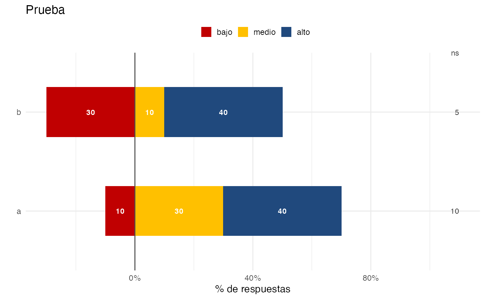

Gr\u00e1fico de barras dise\u00f1ado para comparar categor\u00eda positiva, negativa y neutra.
Uso
gg_bar_3_niveles_stack(
.df,
x = pregunta_lab,
title = NULL,
subtitle = NULL,
caption = NULL,
missing = NULL,
text_size = 3,
flip = TRUE,
colour_neg_neu_pos = c("#C00001", "#FFC000", "#20497D"),
y_prop = prop,
y_na = 1.1,
x_na = 0.6,
facet_col = NULL,
facet_row = NULL,
x_str_entre_ini = "",
x_str_entre_fin = "",
x_str_width = 50,
colour_na = "grey20",
font_family = "Calibri"
)Argumentos
- .df
`data.frame` Debe contener variables `pregunta_lab` y `pregunta_cat`. Funciona bien a partir de data.frame de resultado de funci\u00f3n `tabla_vars_segmentos`.
- x
`quo` Nombre de variable a utilizar en eje X.
- title
`chr` T\u00edtulo del gr\u00e1fico.
- subtitle
`chr` Subt\u00edtulo del gr\u00e1fico.
- caption
`chr` Caption del gr\u00e1fico.
- missing
`chr` vector con categor\u00edas de respuesta consideradas 'missing'.
- text_size
`num` tama\u00f1o de letra.
- flip
`logical` TRUE gira los ejes.
- colour_neg_neu_pos
Vector con tres colores para negativo, neutro y positivo.
- y_prop
`chr` Variable con valor de proporciones a graficar.
- y_na
`dbl` posici\u00f3n de la etiqueta en y de valores missing.
- x_na
`dbl` posici\u00f3n de la etiqueta en x de valores missing.
- facet_col
Variable de facet columna.
- facet_row
Variable de facet fila.
- x_str_entre_ini
`chr` caracter desde el cual se cortar\u00e1 la etiqueta de x. El caracter no queda incluido. Si queda en blanco '', parte desde el inicio,
- x_str_entre_fin
`chr` caracter hasta donde se cortar\u00e1 la etiqueta de x. El caracter no queda incluido. Si queda en blanco '', termina al final.
- x_str_width
`int` numero de caracteres para wrap las etiquetas de x.
- colour_na
color para los valores de dato missing, si se incluye.
- font_family
letra a utilizar en el gr\u00e1fico. Por defecto se usa 'Calibre'.
Ejemplos
df_chart <- data.frame(pregunta_lab = c(rep('a', 4), rep('b', 4)),
x_other = c(rep('x', 4), rep('y', 4)),
prop = c(-0.1, 0.3, 0.4, 0.1, -0.3, 0.1, 0.4, 0.05),
pregunta_cat = factor(rep(c('bajo', 'medio', 'alto', 'ns'), 2),
levels = c('bajo', 'medio', 'alto', 'ns')))
gg_bar_3_niveles_stack(df_chart,
missing = 'ns',
title = 'Prueba',
font_family = NULL)
